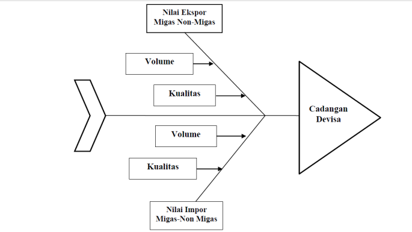
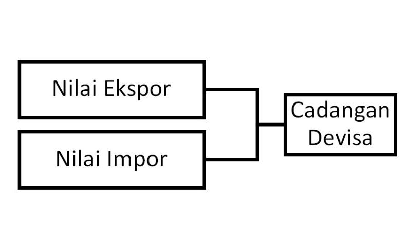
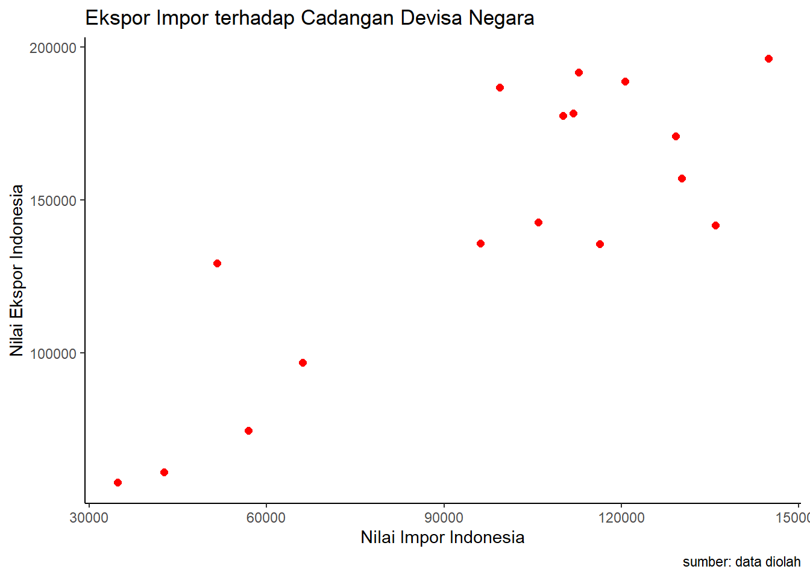

library(tidyverse)
library(readxl)Pengaruh Nilai Ekspor dan Impor Migas-Non Migas terhadap Posisi Cadangan Devisa di Indonesia Tahun 2005-2021
Metode Penelitian Politeknik APP Jakarta
1 Pendahuluan

1.1 Latar belakang
Sebuah negara tidak dapat memenuhi semua kebutuhannya sendiri. Keinginan dan kebutuhan tidak terbatas, namun sumber daya yang tersedia terbatas. Hal ini akan merujuk pada sebuah kondisi dimana seseorang harus menentukan keputusan (trade off). Perkembangan zaman, teknologi dan informasi mendorong negara-negara untuk melakukan trading secara global. Perdagangan internasional dapat terjadi karena perbedaan sumber daya alam, perbedaan selera, adanya kebutuhan barang dan jasa yang belum terpenuhi dalam negeri, hubungan diplomatik antarnegara dan lain sebagainya. Melakukan transaksi dalam perdagangan internasional dapat menumbuhkan perekonomian sebuah negara dan menambah cadangan devisa negara. Berdasarkan Undang-Undang Republik Indonesia Nomor 23 Tahun 1999 Tentang Bank Indonesia Ayat (1), yang dimaksud dengan cadangan devisa adalah cadangan devisa negara yang dikuasai oleh Bank Indonesia, yang tercatat pada sisi aktiva neraca Bank Indonesia, yang antara lain berupa emas, uang kertas asing dan tagihan lainnya dalam valuta asing kepada pihak luar negeri yang dapat dipergunakan sebagai alat pembayaran luar negeri. Cadangan devisa mencakup pula hak atas devisa yang setiap waktu dapat ditarik dari suatu badan keuangan internasional. Bank Indonesia mengupayakan agar cadangan devisa yang dipelihara mencapai jumlah yang oleh Bank Indonesia dianggap cukup untuk melaksanakan kebijakan moneter. Salah satu penyumbang terbesar cadangan devisa negara adalah melalui kegiatan perdagangan internasional yaitu ekspor impor. Perkembangan perekonomian dunia sangat ditentukan oleh ekspor dan impor yang dilakukan negara-negara yang ada di seluruh dunia.Krisis keuangan yang terjadi pada akhir 1990-an dan krisis moneter yang terjadi pada tahun 2008, menjadi pelajaran berharga yang membuat para kebijakan memperbaiki pandangannya tehadap cadangan devisa sebagai proteksi dalam melindungi diri dari krisis moneter. Negara membutuhkan cadangan devisa untuk mempertahankan stabilitas nilai tukar. Tingkat cadangan devisa yang dimiliki sebuah negara juga menjadi salah satu faktor penilaian kelayakan kredit, oleh karen itu negara yang mempunyai cadangan devisa yang cukup dapat mencari pinjaman dengan mudah dan nyaman.

1.2 Ruang lingkup
Dalam penelitian ini, peneliti memerlukan batasan masalah yang berguna untuk memperjelas dan membatasi ruang lingkup mengenai hal-hal apa saja dari masalah yang akan diteliti agar masalah yang diangkat tidak mengarah ke tujuan yang salah. Adapun batasan masalah dalam penelitian ini adalah: 1.Penelitian dilakukan berdasarkan data yang diperoleh dari website resmi pemerintah yaitu Badan Pusat Statistik 2.Data yang digunakan adalah data time series dalam kurun waktu 17 tahun (2005-2021) 3.Penelitian berfokus pada pengaruh ekspor dan impor terhadap cadangan devisa negara. 4.Melakukan regresi pada data yang mendukung permasalahan dan melihat pengaruhnya
1.3 Rumusan masalah
Berdasarkan latar belakang masalah, maka peneliti dapat merumuskan masalah sebagai berikut: 1. Bagaimana kegiatan ekspor impor mempengaruhi Cadangan Devisa di Indonesia? 2. Apakah nilai ekspor berpengaruh positif atau negatif terhadap Cadangan devisa di Indonesia? 3. Apakah Impor berpengaruh positif atau negatif terhadap Cadangan devisa di Indonesia?
1.4 Tujuan dan manfaat penelitian
Tujuan Penelitian Tujuan dari Penelitian ini adalah untuk menambah wawasan dan ilmu bagi si peneliti dan bagi para pembaca dan untuk mengetahui pengaruh nilai ekspor, impor terhadap posisi cadangan devisa di Indonesia.
Manfaat penelitian Manfaat dari penelitian yang dilakukan adalah; a. untuk melihat dan mengetahui apakah hasil penelitian sesuai dengan teori yang ada. b. untuk memperluas wawasan penulis dan pembaca dari berbagai latar belakang terkait pentingnya cadangan devisa negara dan pengaruh ekspor impor bagi devisa negara. c. dengan metode penelitian yang digunakan kedepannya Penelitian ini dapat dijadikan sebagai bahan referensi dan pertimbangan untuk hal terkait.
1.5 Package
Ini tidak wajib ada di packages yang digunakan antara lain sebagai berikut:
2 Studi pustaka
Teori Cadangan Devisa
Di dalam perkembangannya, ekonomi nasional Indonesia dikenal dua terminologi cadangan devisa, yaitu official foreign exchange reserve dan country foreign exchange reserve, yang masing-masing mempunyai cakupan yang berbeda. Pertama, merupakan cadangan devisa milik negara yang dikelola, diurus, dan ditatausahakan oleh bank sentral, sesuai dengan tugas yang diberikan oleh UU No. 13 Tahun 1968. Kedua, mencakup seluruh devisa yang dimiliki badan, perorangan, lembaga, terutama lembaga keuangan nasional yang secara moneter merupakan bagian dari kekayaan nasional (Halwani, 2005 dalam Juniantara, 2011:34). Cadangan devisa diartikan sebagai total valuta asing yang dimiliki pemerintah dan swasta dari suatu negara. Cadangan devisa dapat diketahui dari posisi neraca pembayaran. Semakin banyak devisa yang dimiliki pemerintah dan penduduk suatu negara semakin besar kemampuan negara tersebut dalam melakukan kegiatan transaksi ekonomi dan keuangan internasional dan semakin kuat pula mata uang negara tersebut (Rizieq, 2006). Besar kecilnya akumulasi cadangan devisa suatu negara biasanya ditentukan oleh kegiatan perdagangan (ekspor dan impor) dengan arus modal negara tersebut. Dan kecukupan cadangan devisa ditentukan oleh besarnya kebutuhan impor dan sistem nilai tukar yang digunakan (Pridayanti, 2014). Ketika tingkat ekspor mengalami penurunan akan cadangan devisa juga akan mengalami penurunan dan sebaliknya jika tingkat ekspor mengalami peningkatan maka cadangan devisa yang dimiliki juga akan mengalami peningkatan (Sonia & Setiawina, 2016).
Teori Ekspor
Ekspor adalah pembelian negara lain atas barang buatan perusahaan-perusahaan di dalam negeri. Faktor terpenting yang menentukan ekspor adalah kemampuan dari Negara tersebut untuk mengeluarkan barang-barang yang dapat bersaing dalam pasaran luar negeri. (Sukirno, 2008: 205). Ekspor akan secara langsung mempengaruhi pendapatan nasional. Akan tetapi, hubungan yang sebaliknya tidak selalu berlaku, yaitu kenaikan pendapatan nasional belum tentu menaikkan ekspor oleh karena pendapatan nasional dapat mengalami kenaikan sebagai akibat dari kenaikan pengeluaran rumah tangga, investasi perusahaan, pengeluaran pemerintah dan penggantian barang impor dengan barang buatan dalam negeri. (Sukirno, 2008:206). Ekspor neto merupakan selisih antara ekspor total dengan impor total suatu negara. Apabila nilai ekspor neto positif, berarti nilai ekspor lebih besar dari nilai impor dan apabila nilai ekspor neto negatif, berarti nilai ekspor lebih kecil dari nilai impor (Case and Fair, 2007: 387)
Teori Impor
Proses membeli barang atau jasa asing dari satu negara ke negara lain disebut impor. Terjadinya impor disebabkan kurangnya produksi dalam negeri yang menyebabkan negara harus membeli barang atau jasa dari negara lain. Dalam proses pembelian barang atau jasa tersebut menggunakan alat pembayaran yaitu valuta asing yang berasal dari cadangan devisa (Sonia & Setiawina, 2016). Impor dapat diartikan sebagai pembelian barang dan jasa dari luar negeri ke dalam negeri dengan perjanjian kerjasama antara 2 negara atau lebih. Impor juga bisa dikatakan sebagai perdagangan dengan cara memasukkan barang dari luar negeri ke wilayah Indonesia dengan memenuhi ketentuan yang berlaku (Hutabarat, 1996:403). Impor adalah proses transportasi barang atau komoditas dari suatu negara ke negara lain secara legal, umumnya dalam proses perdagangan. Proses impor umumnya adalah tindakan memasukan barang atau komoditas dari negara lain ke dalam negeri. Impor barang secara besar umumnya membutuhkan campur tangan dari bea cukai di negara pengirim maupun penerima. Impor adalah bagian penting dari perdagangan internasional. Kegiatan impor dilakukan untuk memenuhi kebutuhan rakyat. Produk impor merupakan barang-barang yang tidak dapat dihasilkan atau negara yang sudah dapat dihasilkan,tetapi tidak dapat mencukupi kebutuhan rakyat (Ratnasari, 2012).
Kerangka Pemikiran

3 Metode penelitian
3.1 Data
Jenis dan Sumber data yang digunakan dalam penelitian ini adalah data time series yang diperoleh dari Badan Pusat Statistik dan Bank Indonesia, dalam kurun waktu 17 tahun mulai tahun 2005-2021.
| tahun | ekspor |
|---|---|
| 2005 | 85,659.00 |
| 2006 | 100,798.60 |
| 2007 | 114,101.00 |
| 2008 | 137,020.40 |
| 2009 | 116,510.00 |
| 2010 | 157,779.10 |
| 2011 | 203,496.60 |
| 2012 | 190,020.30 |
| 2013 | 182,551.80 |
| 2014 | 175,980.00 |
| 2015 | 150,366.30 |
| 2016 | 145,134.00 |
| 2017 | 168,828.20 |
| 2018 | 180,012.70 |
| 2019 | 167,683.00 |
| 2020 | 163,191.80 |
| 2021 | 231,609.50 |
| tahun | impor |
|---|---|
| 2005 | 57,700.90 |
| 2006 | 61,065.50 |
| 2007 | 74,473.40 |
| 2008 | 129,197.30 |
| 2009 | 96,829.20 |
| 2010 | 135,663.30 |
| 2011 | 177,435.70 |
| 2012 | 191,691.00 |
| 2013 | 186,628.70 |
| 2014 | 178,178.80 |
| 2015 | 142,694.50 |
| 2016 | 135,652.80 |
| 2017 | 156,985.50 |
| 2018 | 188,711.30 |
| 2019 | 170,727.70 |
| 2020 | 141,568.80 |
| 2021 | 196,190.00 |
| tahun | devisa |
|---|---|
| 2005 | 34,724.00 |
| 2006 | 42,586.00 |
| 2007 | 56,920.00 |
| 2008 | 51,639.00 |
| 2009 | 66,105.00 |
| 2010 | 96,207.00 |
| 2011 | 110,123.00 |
| 2012 | 112,781.00 |
| 2013 | 99,387.00 |
| 2014 | 111,862.00 |
| 2015 | 105,931.00 |
| 2016 | 116,362.00 |
| 2017 | 130,196.38 |
| 2018 | 120,654.27 |
| 2019 | 129,183.28 |
| 2020 | 135,897.00 |
| 2021 | 144,905.38 |
dat<-read_excel('dataregku.xlsx')
ggplot(data=dat,aes(x=devisa,y=impor)) +
geom_point(color="red",size=2) + # setiap nambah command, selalu kasih tanda +
labs(title="Ekspor Impor terhadap Cadangan Devisa Negara ",
x="Nilai Impor Indonesia",
y="Nilai Ekspor Indonesia",
caption = "sumber: data diolah") +
theme_classic()

3.2 analisis
Metode penelitian yang dipilih adalah regresi univariat atau Ordinary Least Square (OLS) dengan 1 variabel independen.Selain itu, menggunakan R untuk mengolah data dan regresi, Quarto, Zetero untuk daftar pustaka dan github untuk menjadikan penelitian ini menjadi bentuk html. Penelitian ini bermaksud mencari hubungan antara hwy (ekspor,impor) dan cty (cadangan devisa). Spesifikasi yang dilakukan adalah:
\[ y_{t}=\beta_0 + \beta_1 x_t+\mu_t \] di mana \(y_t\) adalah hwy dan \(x_t\) adalah cty.
4 Pembahasan
4.1 Pembahasan masalah
Berdasarkan Bank Indonesia, posisi cadangan devisa Indonesia pada akhir Juni 2022 adalah sebesar 136,4 miliar dolar AS, lebih tinggi dibandingkan dengan posisi pada akhir Mei 2022 sebesar 135,6 miliar dolar AS. Peningkatan posisi cadangan devisa pada Juni 2022 dipengaruhi oleh penerbitan global bond Pemerintah serta penerimaan pajak dan jasa. Posisi cadangan devisa tersebut setara dengan pembiayaan 6,6 bulan impor atau 6,4 bulan impor dan pembayaran utang luar negeri pemerintah, serta berada di atas standar kecukupan internasional sekitar 3 bulan impor. Bank Indonesia menilai cadangan devisa tersebut mampu mendukung ketahanan sektor eksternal serta menjaga stabilitas makroekonomi dan sistem keuangan. Ke depan, Bank Indonesia memandang cadangan devisa tetap memadai, didukung oleh stabilitas dan prospek ekonomi yang terjaga, seiring dengan berbagai respons kebijakan dalam mendorong pemulihan ekonomi. Salah satu yang mempengaruhi cadangan devisa adalah nilai ekspor-impor. Hal ini sesuai dengan teori konsumsi yang menyatakan bahwa kenaikan ekspor akan diikuti oleh kenaikan impor juga. Banyak factor yang mempengaruhi ekpor dan impor di Indonesia salah satunya adalah volume ekspor dan kualitas ekspor. Beberapa negara yang menjadi mitra dagang lebih mementingkan kuantitas daripada kualitas dan beberapa negara lebih mementingkan hal sebaliknya, yaitu kualitas. Namun tidak sedikit juga negara yang melakukan perdagangan internasional membutuhkan dan mengutamakan kuantitas banyak(volume) juga dengan kualitas yang baik. Tentunya dengan harga yang lebih mahal pula. Berbeda dengan China, negara yang sering sekali memproduksi secara massal dengan harga yang murah namun kualitas rendah. Tetapi hal ini mulai diubah oleh China, mereka mulai memperhatikan kualitas agar dapat memiliki daya saing tinggi. Indonesia adalah negara penghasil kopi terbesar ketiga di dunia setelah Brazil dan Vietnam, padahal jika dibandingkan dari luas areal lahan, Indonesia lebih luas daratannya dibandingkan Vietnam tetapi Indonesia kalah dalam jumlah produksinya. Indonesia juga merupakan negara yang menghasilkan beras terbesar di dunia, namun tetap saja masih mengimpor beras dari Thailand. Permintaan (demand) konsumen pasti akan terus meningkat sehingga Indonesia harus memilih pilihan yang tersedia unttuk memenuhi kebutuhan yang tidak terbatas itu. Salah satu pilihan yang mungkin adalah melakukan trading dan pastinya akan menambah cadangan devisa negara.
4.2 Analisis masalah
Hasil regresinya adalah sebagai berikut:
reg1<-lm(devisa~ekspor+impor,data=dat)
summary(reg1)
Call:
lm(formula = devisa ~ ekspor + impor, data = dat)
Residuals:
Min 1Q Median 3Q Max
-33611 -7527 -1540 10921 35430
Coefficients:
Estimate Std. Error t value Pr(>|t|)
(Intercept) -1.234e+04 2.389e+04 -0.516 0.614
ekspor 4.499e-01 3.936e-01 1.143 0.272
impor 2.782e-01 3.250e-01 0.856 0.406
Residual standard error: 19280 on 14 degrees of freedom
Multiple R-squared: 0.7269, Adjusted R-squared: 0.6878
F-statistic: 18.63 on 2 and 14 DF, p-value: 0.0001134Dilihat dari data ekspor dan impor Indonesia sejak tahun 2005-2021, nilai ekspor dan impor terus mengalami peningkatan. Nilai ekspor Indonesia pada tahun 2020 adalah sebesar US$ 163 191,8 sedangkan nilai impor Indonesia US$ 141 568,8. Ketika banyak negara di dunia mengalami penurunan ekspor, justru Indonesia meningkat. Bahkan pada tahun 2021, ketika kondisi negara berada dalam tahap pemulihan pandemi nilai ekspor semakin melonjak tinggi mencapai US$ 231 609,5 diikuti nilai impor yang naik sebesar US$ 196 190,0. Nilai ekspor 2021 merupakan nilai ekspor tertinggi Indonesia sejak tahu 2005-2021.Indonesia terus mengupayakan agar ekspor Indonesia terus mengalami peningkatan.
Peneliti mengalami beberapa Kesulitan dan kendala dalam proses penelitian. Data yang diperoleh dari Badan Pusat Statistik harus di input secara manual ke excel. Disamping itu, penulis juga harus mengalami kesulitan dalam proses regresi karena data yang digunakan belum cukup kuat untuk melihat pengaruh y terhadap x.
5 Kesimpulan
Berdasarkah analisis dan hasil regresi yang telah diperoleh,maka dapat disimpulkan bahwa setiap ekspor senilai 0.4499 meningkatkan cadangan devisa negara sebesar US$ 1 juta, dan setiap impor bernilai US$ 1 juta akan mengurangi cadangan devisa senilai USD 0.2782 juta. Ketika ekspor meningkat maka impor juga meningkat. Dan Hal ini menunjukkan bahwa bahwa ekspor dan impor mempengaruhi cadangan devisa negara. yang paling berpengaruh adalah nilai ekspor yang menunjukkan positif. Semakin banyak mengekspor akan menyumbang devisa negara yang besar pula. Sedangkan impor berpengaruh negatif walaupun tidak terlalu menyumbang terhadap pendapatan devisa negara.
Saran
- Indonesia perlu lebih fokus dalam upaya peningkatan volume dan kualitas ekspor, supaya nilai ekspor terus mengalami peningkatana positif terhadap devisa negara.
6 Referensi
Badan Pusat Statistik. (t.t.). Diambil 19 Januari 2023, dari https://www.bps.go.id/indicator/13/1091/1/posisi-cadangan-devisa.html
Cadangan Devisa Juni 2022 Meningkat. (t.t.). Diambil 19 Januari 2023, dari https://www.bi.go.id/id/publikasi/ruang-media/news-release/Pages/sp_2417022.aspx
Indonesia.go.id—Cadangan Devisa Indonesia Catat Rekor Tertinggi. (t.t.). Diambil 19 Januari 2023, dari https://www.indonesia.go.id/kategori/editorial/3218/cadangan-devisa-indonesia-catat-rekor-tertinggi
UU No. 24 Tahun 1999 tentang Lalu Lintas Devisa dan Sistem Nilai Tukar [JDIH BPK RI]. (t.t.). Diambil 19 Januari 2023, dari https://peraturan.bpk.go.id/Home/Details/45335